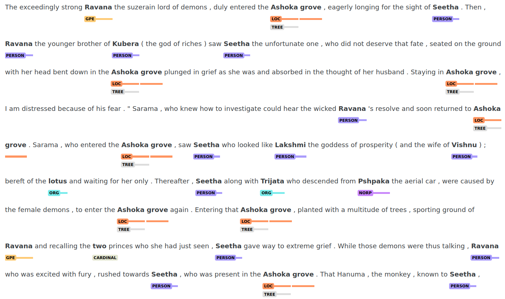

Custom Spacy Ramayana NER Pipeline
A demo of the rule-based approach.
Introduction
Named Entity Recognition (NER) is an important aspect of NLP because it defines and distinguishes one domain from another. Hence, specializing an NER model to a domain adds much needed capability to an NLP pipeline.
In this blog post, we demonstrate Named Entity Recognition on the epic Ramayana, using the Spacy NLP library.
You can follow along with this Kaggle notebook which has pointers to the dataset.
Why the Ramayana dataset?
The default Spacy NER model is trained on general text found on the internet. It may not be adequate to extract entities in specialized domains such as legal, medical or historical. While these are potentially open domains, we chose the Ramayana because it is a relatively well-defined and closed domain. Such a domain allows us to use rule-based NER as opposed to trained-model NER. The former is more accurate and less resource-intensive albeit more labour-intensive.
Creating the Spacy pipeline
We create the Spacy pipeline using the medium model en_core_web_md.
SPACY_MODEL = "en_core_web_md"
nlp = spacy.load(SPACY_MODEL)
After creating the Spacy model, we create a document object out of the raw text
taken from the literal_meaning column of the dataset. translated_meaning_text
is a text blob created from the raw text of the dataset.
translated_doc = nlp(translated_meaning_text)
Invoking the Spacy NER
Let us follow the steps as we iteratively improve the Spacy NER to tune it for our dataset domain.
Note that we are discussing a demo/starter notebook which is by no means complete. To correctly execute the NER appropriate to the subject text, the pattern list will have to be completely specified.
Detecting default entities
We detect baseline entities based on the native NER model. The entities in the NER are general and do not fit specific domains. Here is an example:
ents = list([(ent.text,ent.label_) for ent in translated_doc.ents])
unique_ents = sorted(list(set([(ent.text,ent.label_) for ent in translated_doc.ents])))
unique_ents
The output excerpt is:
('Ashoka', 'GPE'),
('Ashoka', 'PERSON'),
('Ashoka garden', 'PERSON'),
('Ashoka grove', 'PERSON'),
('Ashoka-grove', 'LOC'),
...
('Ashoka-grove', 'PERSON'),
('Ayodhya', 'GPE'),
('Ayodhya', 'PERSON'),
('Ayodhya City', 'GPE'),
...
('Ayodhya Hanuama', 'PERSON'),
When we closely examine the entities, some of them seem to have wrong
labels. Entities such as ‘Ayodhya’ have been labelled PERSON, for which
GPE suits better. ‘Ashoka’ is another entity wrongly labelled as
PERSON. ‘Ashoka grove’ and ‘Ashoka garden’ are also wrongly labelled as
PERSON. Some entities contain the label WORK_OF_ART which have to be
removed as it does not match any context.
Creating custom pipeline components
Some of the wrongly labelled entities can be corrected, thanks to Spacy’s custom pipeline components. Spacy’s pipeline contains a list of components which we can see with the below command:
Here are a list of custom components we can use:
- Entity ruler: We can deal with singly labelled entities with the help of our custom
component
entity_ruler. This component is inserted before the nativenercomponent in the pipeline. Entities such as ‘Ayodhya’ can be relabeled fromPERSONtoGPE. ‘Ashoka’ can also be given a custom label asTREE. However, we cannot correct mis-labelled entities which are overlapping. The Spacy native NER works around the entity ruler allowing us to preempt the errors of the Spacy NER.
# Entity ruler ##############################
# List of entities and patterns for entity ruler
patterns = [
{"label": "GPE", "id":"ayodhya","pattern":"Ayodhya-City"},
{"label": "GPE", "id":"ayodhya", "pattern":[{"LOWER":"ayodhya",}]},
{"label": "GPE", "id":"ayodhya", "pattern":[{"LOWER":"ayodhya"}, {"LOWER": "city"}]},
{"label": "LOC", "id":"ashoka-grove","pattern":"Ashoka-grove"},
{"label": "TREE","pattern":"Ashoka"},
]
if not nlp.has_pipe("entity_ruler"):
ruler = nlp.add_pipe("entity_ruler", before="ner")
ruler.add_patterns(patterns)
While the entity ruler and Spacy NER working in tandem, are able to correctly
identify the entities specified, we still have the problem of overlapping
entities. These are entities where a token belongs to multiple entities such
as {{Ashoka}(TREE) grove}(LOC).
This brings us to the Span ruler.
- Span ruler: We can use this component when dealing with spans. It can take care of mis-labelled spans. Overlapping entities inside spans can also be detected. We insert the span ruler before the entity ruler.
# Span ruler ############################################
# List of entities and patterns for spanruler
spanruler_patterns = [
#{"label": "LOC", "id":"ashoka-grove","pattern":"Ashoka-grove"},
{"label": "LOC", "id":"ashoka-grove", "pattern":[{"LOWER":"ashoka"}, {"LOWER": "grove"}]},
{"label": "LOC", "id":"ashoka-grove", "pattern":[{"LOWER":"ashoka"}, {"LOWER": "garden"}]},
]
if not nlp.has_pipe("span_ruler"):
ruler = nlp.add_pipe("span_ruler", before="entity_ruler")
ruler.add_patterns(spanruler_patterns)
- normalize_entities component: With the above components added, we are
able to correctly detect entities as well as overlapping spans. But these
appear in separate spaces which need to be unified. We can unify the lists of
spans and entities and the results can be
kept under the
entitieskey of the spans dictionary. We add this component after the native NER.
@Language.component("normalize_entities")
def normalize_entities(doc):
# Get entity and span objects from the document
ent_objs = [e for e in doc.ents]
span_ent_objs = [s for s in doc.spans["ruler"]]
# Add the span entity objects to the entity objects list
ent_objs.extend(span_ent_objs)
# Insert this list into the spans dictionary
doc.spans["entities"] = ent_objs
return doc
# Add this component to the Spacy pipeline
if not nlp.has_pipe("normalize_entities"):
ruler = nlp.add_pipe("normalize_entities", after="ner")
- filter_entities component: We see that some entities are labelled
WORK_OF_ARTwhich shouldn’t be labelled at all. We have to filter our entities to remove this label. We will use a component for this and insert it between the NER and thenormalize_entitiescomponent.
@Language.component("filter_entities")
def filter_entities(doc):
# This is the remove list. Add all labels you want to remove here.
remove_list = ["WORK_OF_ART"]
# Filter the entities
filtered_ents = [e for e in doc.ents if e.label_ not in remove_list]
doc.ents = filtered_ents
return doc
# Add this component to the Spacy pipeline
if not nlp.has_pipe("filter_entities"):
ruler = nlp.add_pipe("filter_entities", after="ner")
Our pipeline finally looks like this:
nlp.pipe_names
['tok2vec',
'tagger',
'parser',
'attribute_ruler',
'lemmatizer',
'span_ruler',
'entity_ruler',
'ner',
'filter_entities',
'normalize_entities']
Visualization
We can now visualize all the entities using Displacy. Here, we can have a look at the overlapping entities in spans.

Conclusion
In this blog post, we saw how to customize the Spacy NER pipeline, in a step-by-step manner. The entity correction is by no means complete. We still haven’t taken care of misspelled words and typos that have been mis-labelled as entities. All these gaps have to be filled before the pipeline can be deemed complete. What we have done here is demo the approach.